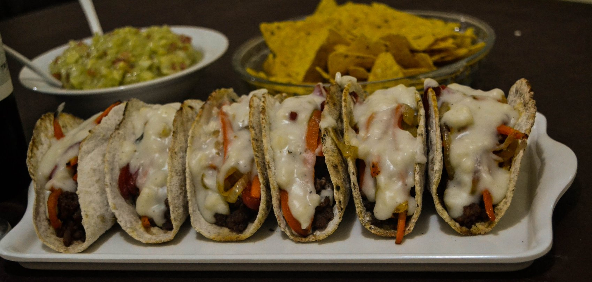
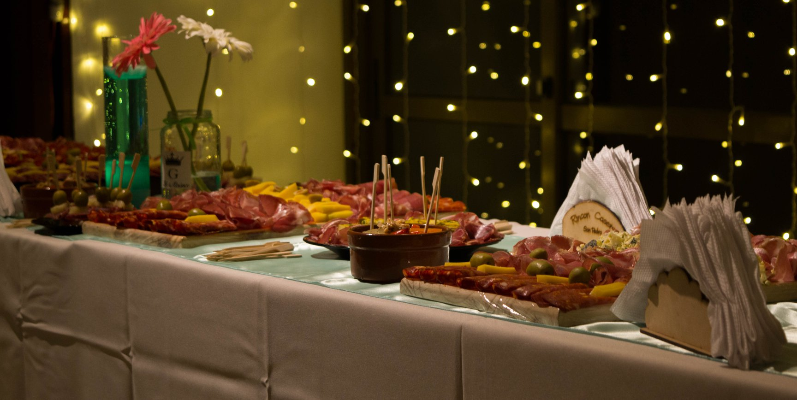
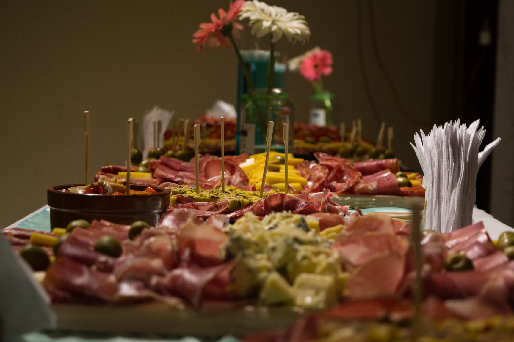

RINCÓN CASERO SAN PEDRO Comenzó a elaborar sus productos hace un par de años pero nació hace muchas décadas cuando la abuela Josefina se pasaba los días cocinando para toda la familia ante la sacrificada y Feliz jornada de trabajo. Por ese entonces tenía una entrometida y voluntariosa nieta que siempre metía los dedos en los dulces, en las comidas, los postres, etc... Hoy esa Nieta llamada Susana refleja con sus manos los mejores momentos de su infancia con su abuela deleitando a su familia, amistades y ahora a toda la gente que añora los Aromas y Sabores de su propia infancia. Aquellos inolvidables momentos se convirtieron en este Emprendimiento Familiar donde nuestros propios hijos Lautaro, Santino junto a los abuelos Nilda y Carlos y desde este RINCÓN se continúa elaborando productos CASEROS con los mismos métodos de aquellos especiales encuentros.